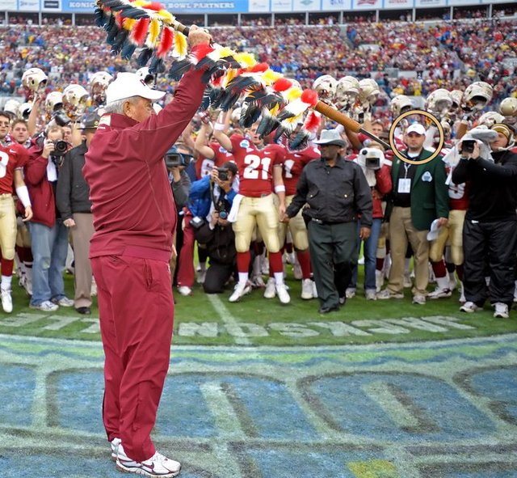
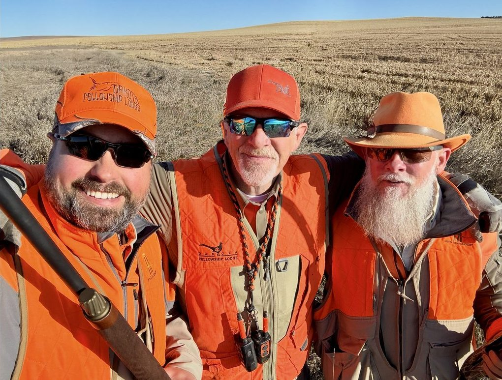
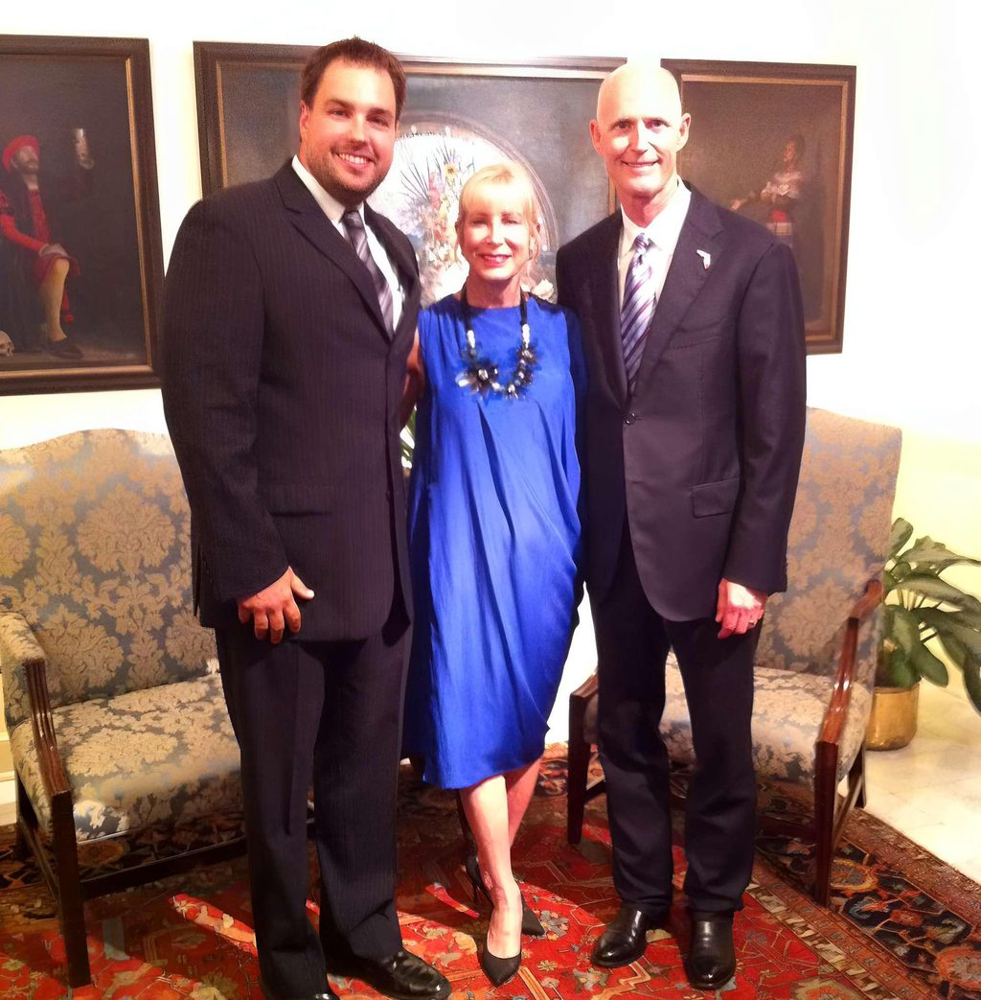
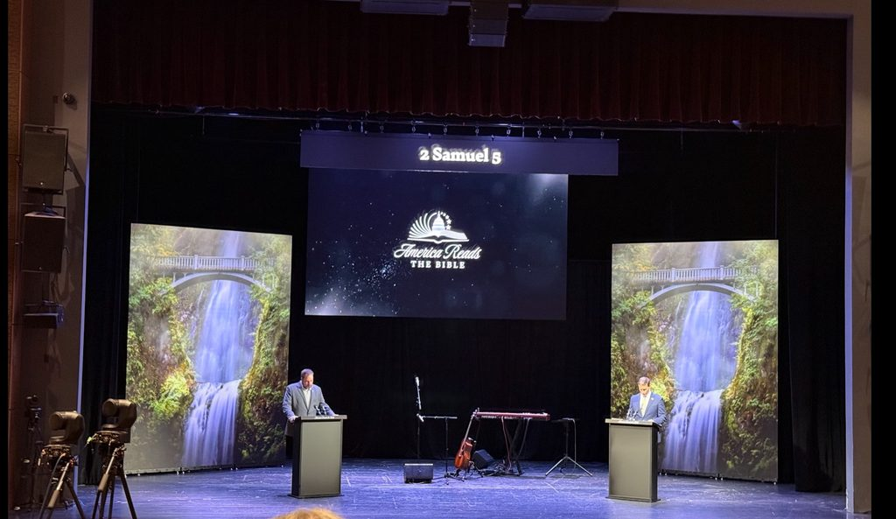
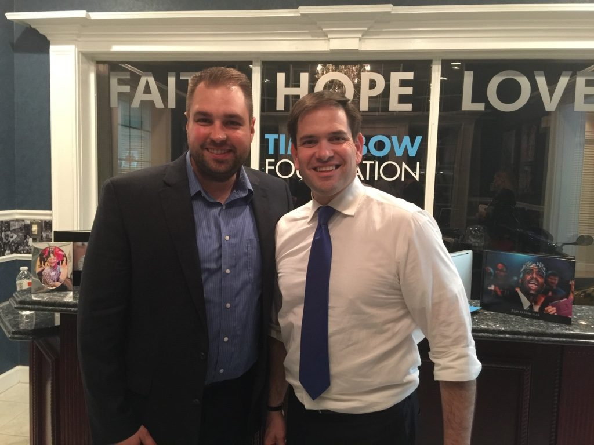
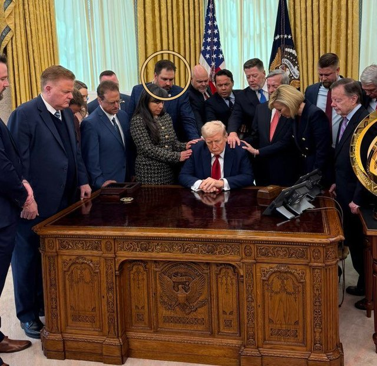
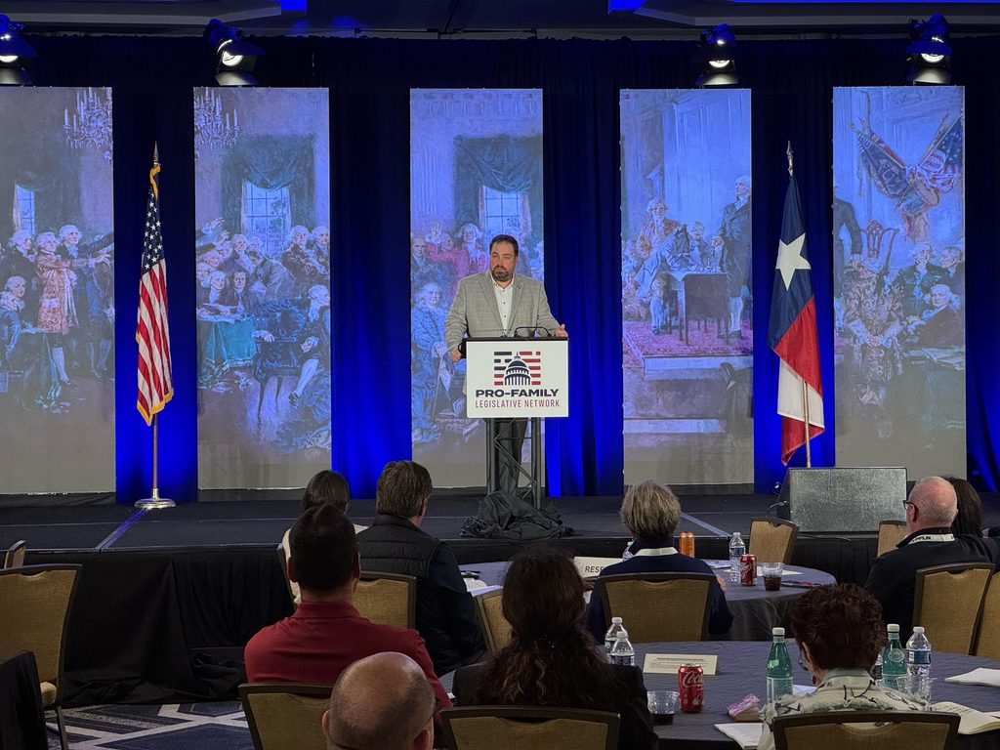
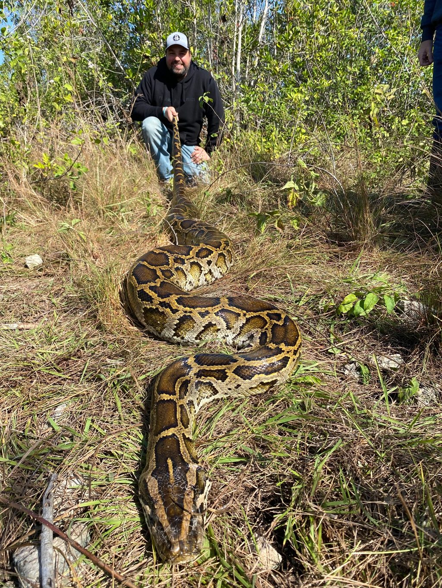

Impactful moments
All glory to God! I am grateful beyond words for the people, places and opportunities He has allowed me to be part of!
Hover a photo for where and when. Click to enlarge.


















Every one of these has a story
Invite Erik to speak